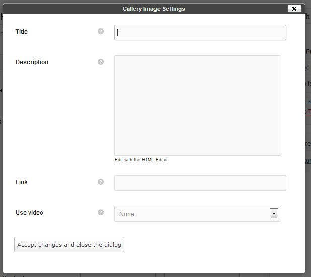
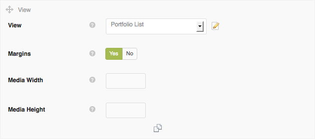
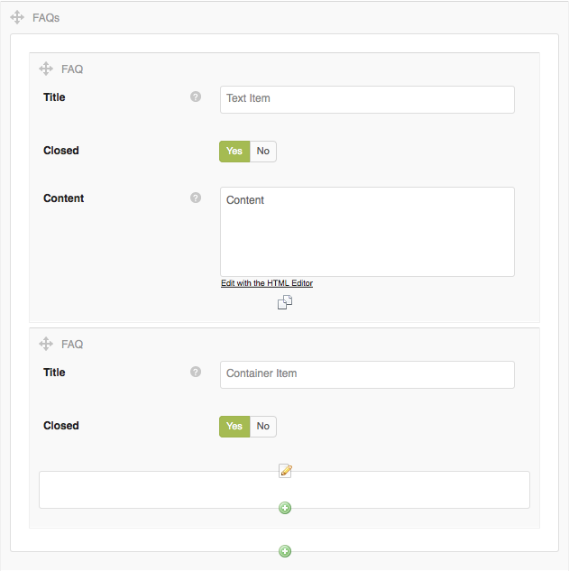

1 Getting Startedtop
1.1 Download Package Contents
Once you have downloaded and unzipped the OneUp package you will be faced with a list of files and folders. An explanation of these is as follows. Any item not mentioned here should be ignored for the moment.
Folders
| oneup.theme.zip | This is a zip archive of the theme. This is used for installation method 2 (see below) | |
| docs | This is the help documentation. To view simply open index.html found inside this folder | |
1.2 Installing Your Theme
Once you have downloaded the OneUp package from Themeforest.net, there are 2 ways of installing this theme. These are as follows:
METHOD 1
- Unzip the download package using Winzip or equivalent.
- You will see another zip archive file inside called oneup.theme.zip, unzip this file also using Winzip or equivalent software and using an FTP client (eg. Filezilla), upload its contents to your Wordpress installation. You will need to place the folder into the following location: wp-content/themes
- Now inside your Wordpress admin area, go to Appearance > Themes and there you will see the OneUp Theme.
- Click Activate to activate the theme. If you do not see the theme in this screen, you have done something incorrectly. Review the last few steps again.
METHOD 2
- Unzip the OneUp download package. Once unzipped you will see a zip file named oneup.theme.zip, this is a compressed version of the theme.
- Now inside your Wordpress admin area, go to Appearance > Themes > Install Themes (tab) > Upload
- Click browse and locate this oneup.theme.zip file and upload it
- Now you will see the OneUp theme in the Manage Themes tab.
- Click Activate to activate the theme. If you do not see the theme in this screen, you have done something incorrectly. Review the last few steps again.
Installation Video
Here is a link to an video showing the installation of the theme and the importing of demo content:
INSTALLATION VIDEOCongratulations you have now successfully installed the OneUp Theme
1.3 Theme Installation Errors
Do not upload the Themeforest download package directly to your Wordpress site, because this will lead to errors. Make sure to Unzip this package and inside you will find the theme zip archive: oneup.theme.zip. This is what you will need to upload to your Wordpress installation
If you upload / Install the OneUp theme and you get one of the following errors, then you have forgotten to unzip the download package.
- This theme is invalid
- This theme is missing a style.css
2 Theme Setuptop
Before you start using the OneUp theme, a few setup steps are required. This section will walk you through these steps.
2.1 Importing Demo Content
Some buyers like to install their theme and have it look exactly like the Themeforest preview site. If this is something you would like to do, then follow the steps in this section. This step is optional so feel free to skip it. The subsequent sections will provide all the instructions you need to insert your own content manually.
The dummy content inserted in this step will not contain the beautiful images seen in the Themeforest.net demo. These images cannot be included because they are commercial images, which we have purchased for theme demonstration only and we do not have a redistribution license for these assets.
To Import Demo ContentMake sure to install and activate the OneUp theme before importing any demo content.
- Install and activate the OneUp theme. (See section above)
- Go to the OneUp theme options Appearance > Theme Options
- The General tab should be open by default, but if not click it to show the general options.
- The very first section in the General is the demo Content import section.
- Click the large green Import Demo Content button once only.
- The theme will now import our demo content into you site. A progress bar will inform you of the import processes progress.
- This importer will basically import posts, pages, comments, custom fields, categories, tags, sidebars, widgets, menus and all configuration from our preview content export file.
Please note that dummy images will be used instead of the premium image assets we have used in our online preview.
Alert 1 Due to limitations of the importer function in this theme, one the demo content has been imported, the homepage of the theme will be set to the "Sample Page" which comes with all fresh installs of WordPress. To rectify this, go to Settings>Reading from the main WP admin menu and in the first option at the top of the page entitled "Front page displays", set it to "A static page" and select your desired homepage from the drop list of imported pages. Save the changes and the homepage will now be updated.
Alert 2 If you already have content in your site, you will be asked to confirm the import, but if your site is a fresh installation of Wordpress, there will be no confirmation request. Importing demo content will not overwrite existing content such as posts or pages, but it will replace all sidebar and widget configuration. So please be aware of this before you decide to do this process.
3 Theme Structure - How It Workstop
The OneUp theme is essentially a single page theme with a separate blog section however it can be used as a multi-page theme also. The single page layout is made up of a splash page and multiple sub section. These sub sections make up the various parts of the single page layout. To construct this site structure you would use the page builder. See the Page Builder section for instruction on how to achieve this layout.
4 Retina Supporttop
The OneUp theme contains optional support for devices with a retina display. This support may be enabled/disabled via the theme options ( Appearance>Theme Options>Advanced Tab>Retina Support> Yes/No).
What retina support really means is that the theme will serve hi-res version of content images to decide which have a retina display. This is done automatically for all content used in the theme except for one place; The site logos.
Creating a Retina Site Logo
If retain support is enabled, a high resolution version of the site logo is required. The theme will not automatically create this, it must be done manually. See the instructions below:
- Using image editing software, you will need to create a version of your logo image which is 2 times the size of your original logo. For example is your original logo is 100x50px, the retina logo will need to be 200x100px.
- When creating this retina logo, there is a rule about how the retina logo has to be named. The file name must be exactly the same as the original image but with a suffix of @2x, added just before the file type.
- For example, say your original image is called logo.jpg, therefore the retina image file name would be logo@2x.jpg.
- Upload both the normal logo image and the 2x logo image at the same time to your WP theme insert the original logo image into the logo option in the theme options and the theme will automatically take care of the rest.
5 Creating Poststop
The OneUp theme contains 3 different post formats - Standard, Video and Gallery.
5.1 Custom Metaboxes
OneUp supports several post formats, some of them like
Video or
Gallery require additional configuration parameters which can be set in the Metabox Area, under the page content editor. Each time a Post Format is selected, the page updates and only the Metaboxes relevant to the current selections will be shown.
5.2 Post Format: Standard
This format accepts an optional featured image. To insert this featured image do the following:
- In the Featured Image box, click Set featured Image
- This will open the WP media loader. Select the image you wish to use for the featured image. The resolution should be large, minimum of 1000px wide and the pixelentity framework will auto-generate the size required for the post. ( The image should be optimized for web and devices and should have a file size generally less that 300kb. The smaller the file size the better, once the image quality is not compromised. )
- Once the image is loaded ensure the original size is selected and click the Set as Featured Image button.
- Close the media uploader window and publish your post.
5.3 Post Format: Video
This format accepts a custom video post type as its media content. To insert this video do the following:
- Scroll down the page to the Video Options Metabox. There you will find a drop menu containing the list of all the custom video post types which have been created.
- Select the video you wish to feature in this post and publish the post.
In order for a video to appear in the list, it first needs to be created. See the section on Creating A Video for more information.
5.4 Post Format: Gallery
This format accepts a custom gallery post type as its media content. To insert this gallery do the following:
- Scroll down the page to the Gallery box. There you will find a drop menu containing the list of all the custom gallery post types which have been created.
- Select the gallery you wish to feature in this post.
Once the required gallery has been selected, the following options can be found immediately below:
| Show As | Select how this gallery's content should be shown in the post.
Slider (Volo) - Slider with Side to side image sliding transitions.
Slider (Vista) - Slider with pan/zoom effects (aka Ken Burns effect).
Slider (Vario) - Slider with varied image transitions and video support.
Gallery (Grid) - Grid of images which open in a lightbox
Gallery (Cover) - One single cover image, with the gallery opening in a lightbox once the cover image is clicked.
Gallery (Images) - All images in the gallery are shown as single images.
Gallery (Carousel) - All Image or Video content in the gallery is displayed as a carousel. | |
| Media Width | Force gallery images to a fixed width value. May result in image cropping, the extent of which would depend on each image's specific aspect ratio. To avoid cropping of the images leave these fields blank and the gallery will be sized to fit its content / container. | |
| Media Height | Force gallery images to a fixed height value. May result in image cropping, the extent of which would depend on each image's specific aspect ratio. To avoid cropping of the images leave these fields blank and the gallery will be sized to fit its content / container. | |
In order for a gallery to appear in the list, it first needs to be created. See the section on Creating A Gallery for more information.
6 Creating a Gallerytop
The OneUp theme features a Gallery custom post type. This can be found in the main WP admin menu
Galleries. All gallery type posts and portfolio items with a gallery format, will need to have their gallery content created first using this custom post type. Once it has been created here it will be available to be inserted into those areas.
6.1 Direct Upload Gallery
This type of gallery is most suited for when the images you want to display are not already uploaded to your Wordpress installation, it will present you with a big "Drop Files Here" area into which you can just drag and drop images from your hard drive. The gallery will take care of everything and, once the upload process is done, you can just save/publish. The image order can be manually altered by dragging thumbs to suit your needs.
To create a Direct Upload Gallery do the following:
- Select the Galleries item in the main admin menu & select "Add New".
- In the Gallerybox, select "Direct upload".
- Drag and drop your images into the Upload Gallery Images section's drop zone with the dashed outline.
- These images will now load and appear below the drop zone in the Gallery Content area as thumbnails.
- You may drag these thumbnails to reorganize the sequence of images if this is important.
- You may also add an optional featured image to the gallery post. This will be used as the cover for the gallery post in certain configurations.
- Now click Publish to publish this gallery post. This type of post is mostly used to provide content for another post or portfolio project. The post may also be viewed in it's own page however by clicking the View Post button.
6.2 Quick Browse Mode
In addition to the drag and drop methods for uploading images mentioned in the above section, the OneUp theme includes another new and fast way to add images to galleries. This is primarily useful when the media you wish to add to a gallery already exists in your WordPress database, meaning you have uploaded it in the past sometime.
Using this quick browse mode you can view and filter all existing content in the media library in a convenient thumbnails grid and select your desired media directly from that grid, adding it to your gallery in a couple of simple clicks.
To Add Media via "Quick Browse" Mode, Do the Following:
- In the "Add New" or "Edit Gallery" screen, located just above the gallery contents area, you will see a button with the label Add Click this button to open the default WordPress media loader.
- You will now see a grid of thumbnail images showing all of the media which has been uploaded to your website. You can use the filter dropdown to filter the displayed media based on Media Tags (See next section for an explanation of media tags).
- Once you have filtered the results and you have found the media you wish to insert into your gallery, simply click on a thumbnail to select it. Multiple thumbnails may be selected by simply clicking on them. Clicking on a selected thumbnail will deselect it again.
- Once you have selected your images, click Add to add these images to your gallery. The dialog will then close and you will see your image in the list of gallery contents.
6.3 Media Tags
The WordPress media library doesn't allow you to categorize attachments/images in any way besides the upload date. For this reason, in our framework, we have introduced a feature called "Media Tags". Media Tags work exactly like regular "Tags" do for posts: each image can be assigned one or more tags which can then be used to group similar/related images.The media library admin page has been expanded to allow easy media tags management and image filter by tag.
6.4 Media Tags Gallery
When Wordpress media library is already filled with some images, you can categorize them by using media tags. Once you have created one or more media tags, you can use them to create a gallery. Unlike the direct upload case, the gallery will now show a list of all existing media tags: by selecting one (or more) tag from the list (and clicking the refresh button), all the images assigned to those tag will be automatically added to the gallery. Since the same tags can be used in multiple galleries, you don't need to upload the same image multiple times in order for it to appear in different places. Whenever you assign additional images to a media tag, every galleries making use of these tags will also update its content automatically.
See a video of this process in action:
MEDIA TAGS VIDEO
To create a Media Tags Gallery do the following:
- Select the Galleries item in the main admin menu & select "Add New"
- In the Gallery Optionsbox select "Media tags (Any)" or "Media Tags (All)". For an explanation of media tags see the Media Tags section above.
- Any will includes all the images matching at least one of the selected media tags.
- All will include all the images matching all the selected media tags.
- Select one or more Media Tags from the list
- Click Refresh button
- These images will now load and appear below the drop zone in the Gallery Content area as thumbnails.
- You may drag these thumbnails to reorganize the sequence of images in the Gallery if this is important.
- You may also add an optional featured image to the gallery post. This will be used as the cover for the gallery post in certain configurations.
- Now click Publish to publish this gallery post. This post will not appear in your website. This type of post is only used to provide content for another post or portfolio project. The post may be viewed in it's own page however by clicking the View Post button.
6.5 Simple Gallery Captions, Links, Videos

Seeing as galleries are often used to populate other views such as a lightbox, slider or carousel, the images in a gallery can have other content associated with them, which then can be seen in the view to which it provides content. For example, for a carousel which displays video content, a video must be associated with each image in the gallery. Another example is when images are shown in in a slider or lightbox, they can have associated caption title and descriptions. This text is then displayed once that image is shown in the slider or lightbox.
Open the "Edit Gallery" page of the gallery which you would like to edit. Next find the specific image you wish to associate additional content with. The image thumbnail will have 2 icons in the top left corner. Click the "Edit Icon" (pencil and paper). This will open the "Gallery Image Settings" dialog box. In this dialog all of the following are performed.
Adding Links To Gallery Images
To associate a link with this image enter the link into the field entitled "Link". Now click "Accept changes and close the dialog" button to save and return to the gallery edit page. This image will now hold this link and provided the view displaying this image supports image links, clicking this image will send the user to the entered link.
Adding Videos To Gallery Images
To associate a video with this image enter the video url (Vimeo/Youtube) the field entitled "Use Video". Now click "Accept changes and close the dialog" button to save and return to the gallery edit page. This image will now display this video and provided the view displaying this image supports video playback, clicking this image will playback the linked video.
Adding Text Content To Gallery Images
To associate a title and/or description with this image enter the title into the "Title" field and description into the "Description" field. Now click "Accept changes and close the dialog" button to save and return to the gallery edit page. This image will now display this a caption containing a title and description provided the view displaying this image supports captions. All Slider views apart from the splash page slider support captions. The Lightbox view also supports captions.
7 Creating a Videotop
The OneUp theme features a video custom post type. This can be found in the main WP admin menu
Videos. All video type posts and portfolio items will need to have their video content created first using this custom post type. Once it has been created here it will be available to be inserted into those areas.
To create a video custom post do the following:
- Select the Videos item in the main admin menu & select "Add New"
- In the Video Optionsbox select what type of video you would like to create.The options are Youtube and Vimeo
- In both video types, you just need to insert the url of the online video into the Video URL field.
- Finally, click Publish to publish your video custom post type. This post will not immediately appear in your website. This type of post is normally used to provide content for another post or portfolio project. However the post may be viewed in it's own page by clicking the View Post button.
There are a few additional options related to video playback:
| Play Fullscreen | If this option is enabled, the video will playback in a fullscreen lightbox window once clicked on by a user. This can be suitable for HD video content. | |
| Max Width | This field accepts a pixel value which limits the width of the video item when played in the fullscreen lightbox window as mentioned above. This option allows the width of the video to be limited to the video's native resolution. | |
The OneUp theme supports automatically fetching of video cover images, but if you would like to insert your own cover image for the video you can do so using the "Featured Image" control for this video item.
8 Creating a Projecttop
The OneUp theme features a Project custom post type. This can be found in the main WP admin menu
Projects. All portfolio items will need to have their project content created first using this custom post type. Once it has been created here it will be available to be inserted into portfolio pages, as well as widgets.
To create a Project custom post do the following:
- Select the Projects item in the main admin menu & select "Add New"
- Give the Project a title
- Enter a description of the project into the WP editor. This description will be visible below the project media on both the single project page and the scrolling ajax portfolio view.
- Select a format for the project. The project format determines how the project appears on the single project page. The options are: Standard, Video and Gallery. See below for an explanation of each of these types and their associated options.
- Set the projects Featured Image This will be the image which appears on the portfolio pages unless a project format of "Gallery" is specified. In this case either the featured image of the gallery is displayed, or if none exists, then the first image of the gallery is shown.
Portfolio Dialog Box
The edit project page contains a box in the sidebar entitled "Portfolio". In this box you can find a few additional options which dictate how this project will be displayed when in a portfolio grid situation. The options available here are as follows:
| Thumbnail | This option allows you to specify a thumbnail to be shown in the portfolio grid in stead of the theme creating it automatically from the project's media. This is for those users who want to control the cropping of their images in the portfolio grid. | |
| Layout | Here you can specify a custom size/proportion for this project's thumbnail when displayed in the portfolio grid. This option will only work if the chosen portfolio grid supports variable sized project cells. The format is "Width"x"Height", where width is columns and height is the number of rows the cell should span. This can also be overwritten later when creating the grid view itself. | |
| Title | Enter here a custom title which will be shown in the portfolio grid thumbnail (on hover). | |
| Description | Enter here a custom subtitle which will be shown in the portfolio grid thumbnail (on hover). | |
| Lightbox | If set to yes, this project's image content will be displayed in a lightbox view when clicked by the user from the portfolio grid page. | |
| LB Title | Enter a title which will be displayed in the lightbox. | |
| LB Description | Enter a description which will be displayed in the lightbox. (This is ignored for Gallery/Video project formats.) | |
8.1 Project Format: Standard
This format is the most simple project type and has no additional options and on the single projects page holds one single image
The featured image inserted in the above steps. Therefore you can now publish the project.
8.2 Project Format: Video
This format accepts a custom video post type as its media content. To insert this video do the following:
- Scroll down the page to the Video Options box. There you will find a drop menu containing the list of all the custom video post types which have been created.
- Select the video you wish to feature and publish the the project .
In order for a video to appear in the list, it first needs to be created. See the section on Creating A Video for more information.
8.3 Project Format: Gallery
This format accepts a custom gallery post type as its media content. To insert this content do the following:
- Scroll down the page to the Gallery / Slider Options box. There you will find a drop menu containing the list of all the custom gallery post types which have been created.
- Select the gallery you wish to feature in this project.
Once the required gallery has been selected, the following options can be found immediately below:
| Show As | Select how this gallery's content should be shown in the project.
Slider (Volo) - Slider with Side to side image sliding transitions.
Slider (Vista) - Slider with pan/zoom effects (aka Ken Burns effect).
Slider (Vario) - Slider with varied image transitions and video support.
Gallery (Grid) - Grid of images which open in a lightbox
Gallery (Cover) - One single cover image, with the gallery opening in a lightbox once the cover image is clicked.
Gallery (Images) - All images in the gallery are shown as single images.
Gallery (Carousel) - All Image or Video content in the gallery is displayed as a carousel. | |
| Media Width | Force gallery images to a fixed width value. May result in image cropping, the extent of which would depend on each image's specific aspect ratio. To avoid cropping of the images leave these fields blank and the gallery will be sized to fit its content / container. | |
| Media Height | Force gallery images to a fixed height value. May result in image cropping, the extent of which would depend on each image's specific aspect ratio. To avoid cropping of the images leave these fields blank and the gallery will be sized to fit its content / container. | |
In order for a gallery to appear in the list, it first needs to be created. See the section on Creating A Gallery for more information.
9 Custom Thumb Croppingtop
![[thumbnail.crop.png]](shots/mboxes/thumbnail.crop.png)
The OneUp theme contains a custom thumbnail cropping feature. This feature is most useful if you want to control how your large images are cropped when they are for example shown in your portfolio grid. With this feature you can control exactly how the thumbnails are created from your larger images.
To use this feature go to:
Media > Library in the main WordPress menu. Now select any image from the library, an image used in your projects would be most suitable. On the main attachment page, scroll down until you see the dialog box entitled: "Thumbnails". To define a custom crop for a thumbnail, do the following:
- This dialog will contain all of the thumbnail version of this attachment which have been auto-generated by the theme for use in those areas you have inserted this image. If this image features in many areas of the theme, or has done at some stage, but was replaced, this dialog may contain numerous thumbnails.
- Find the thumbnail which corresponds with the size of the thumbnail in your portfolio page (which you wish to re-crop). You may need to check the size of that image in your portfolio grid page. You can do this with an element inspector which is built into most modern browsers. Use it by right clicking once you are hovering the image, then select "Inspect Element" from the context menu. Now you should be able to find the image size in the panels which appear.
- Once you have found the thumb you are looking for, click it in the dialog. This will open the thumb cropping control, hiding all other thumbs in the process.
- With your mouse you can now resize and reposition the cropping frame in the window on the left. Once the position has changed you will see a preview of the resulting thumbnail in the window on the right.
- When you have found a suitable crop for this thumbnail, click the "Save" button. The crop control will close and the other thumbs will reappear.
- Now refresh your portfolio grid page to view the updated thumbnail. Remember to clear your browser cache, otherwise the updated thumbnail may not appear.
Once thumb cropping has been altered, the browser cache should be cleared before viewing the page which contains the updated thumbnail.
10 Creating Staff Member Profilestop
The OneUp theme features a staff member custom post type. This can be found in the main WP admin menu
Staff Members. All staff member profiles which will be inserted into this theme will need to have their content created first using this custom post type. Once it has been created here it will be available to be inserted into the theme via the page builder. The following options are available in this custom post type:
| Position | Enter the staff member's position | |
| Social media links (by name) | Enter the links to the staff member's social media profiles. A field is provided for each available social media hub.To hide an icon, simply leave the field empty. | |
The Staff member's photo and description are inserted using the post's featured image control and the normal editor, while that person's name is entered as the mail title of the custom post type.
11 Creating Servicestop
The OneUp theme features a service custom post type. This can be found in the main WP admin menu
Services. All services which will be inserted into this theme will need to have their content created first using this custom post type. Once it has been created here it will be available to be inserted into the theme via the page builder. The following options are available in this custom post type:
| Icon | Choose an icon which best represents the service | |
| Features | Enter one or more features or benefits of this service and click "Add New". These will appear under the service title, in a horizontal list format. | |
The service's title and description are inserted using the post's title and normal editor. The description area is of a very limited size in the service section so in order to add more text a "more" tag should be used. This should be inserted after the initial few words, used as an intro to the service. When this tag is used a "more" link will appear under the service icon which users can click to read more. They will be taken to the service single page to do so.
12 Creating Testimonialstop
The OneUp theme features a testimonial custom post type. This can be found in the main WP admin menu
Testimonials. All testimonials which will be inserted into this theme will need to have their content created first using this custom post type. Once it has been created here it will be available to be inserted into the theme via the page builder. The following options are available in this custom post type:
| Type | Enter the subtitle for the testimonial's citing. This text will appear immediately after the cite text. This field is usually used for things like showing the position or title of the person who has said the quotation. | |
The testimonial's citing and content are inserted using the post's title and the normal editor. For example if you wanted to show a quotation by Pablo Picasso, the post title would be "Pablo Picasso", the editor would hold the quotation text and the type metabox would show something like "Cubist Painter". The title is how you will recognise this service when selecting it inside the page builder.
13 Creating Slidestop
The OneUp theme features a Slide custom post type. This can be found in the main WP admin menu
Slides. All slides requiring animated caption content which will be inserted into this theme will need to be created first using this custom post type. Once it has been created here it will be available to be inserted into the theme slideshow via the Views custom post type. The following options are available in this custom post type:
| Layout | Boxed - use this setting when the slide will be inserted into a boxed slider.
Full Width - Use this setting when the slide will be inserted into a full width slider.
The setting chosen here does not decide whether the slide is boxed or full width, but only uses this setting to know how to size the image which is about to be inserted into this slide. | |
To insert an image into this slide the featured image control is used. Once the image has been inserted it will appear in the main content box of the
Layer Builder. The slide is now ready to have captions applied and we will explain how this work in the following section.
13.1 Caption Layer Builder
Captions are added to slides using the layer builder. This builder works by assigning each caption to a separate layer. Captions layers may contain text, images or HTML markup. Each layer is they given an X & Y coordinate position as well as animation parameters. In this way complex animated captions may be created for slides.
To create a caption do the following (Once the featured image has been set):
- With the slide image showing in the preview box, enter a size for the slide in the Size box immediately below the preview box. This size should match the size of your slider when it will be inserted into the page. If you are creating a full Width slider, enter 940px for the width (even thought in a full width slider, the image will be bigger then this, the caption area will not be larger then 940px).
- If you wish to change the image in this preview area, simply click the "Change Image" button and the WP media dialog will open so you can choose an alternative image.
- Next click on "Add New Layer" to create a layer for your caption.
- The layer will appear in a table under the slide preview, the dark outline of the table row signifies that this layer is currently being edited. As well as the table row appearing you should also see a set of layer properties. These properties will be explained in a moment here below.
- Add content to this layer by typing in the Content field (if text/HTML content) or clicking on the green "+" icon (if image content). You will see your content appear at position 0,0 or the top left of the slide preview box.
- Add an X & Y position for your caption. These values represent the final position of your caption (after animation) and are relative to the top corner of the image preview window, which is position X=0, Y=0. When you enter new values in these boxes you should see your caption content's position update reflected in the preview window.
- Next enter a value in the Wait field. This value (secs) represents the delay before this caption's animation begins. Example, if a figure of 1.5 is entered, the animation of this caption will begin after one and a half seconds has elapsed.
- Next enter a value in the Duration field. This value (secs) represents the amount of time the caption takes to animate. Therefore the longer the duration time the slower your caption will move/animate. Likewise, the shorter the duration time, the faster it will move.
- Finally to complete this caption, you will need to set the caption's properties. These are as follows:
Caption Layer Properties
| Theme | Choose the theme of the caption, White or Black. This determines whether the main coloring of the caption text is white or black. | |
| Text | Set the size of the caption text from the available pre-made options. See the slide preview for live updates of the caption text once an option has been changed. | |
| Transition | Choose the animation/transition you would like to apply to your caption. See the following page for a demo of all available transitions: http://daneden.me/animate/ | |
| Color | Select the color of the text using a color picker. | |
| Background | If you require a background for the caption text you can set this here. The list contains different % settings for the background's transparency. 100% denotes a solid background. | |
| BG Color | Select the color of the text background using a color picker. | |
| Classes | Here you can enter custom class names which will be added to this caption. These class would then need to be styled in your CSS stylesheet. | |
| Style | Here you can add inline CSS properties which will be added to the caption. Eg. "font-size=20px;" (without quotes) | |
To test your animation at any time click the "Run" button located immediately beneath the slide preview area.
Once the caption layer's properties are all set, click the "Save" button, and then proceed to add more layers as required. When multiple layers have been added, make sure that the layer you wish to edit has the dark color of the selected layer. To select a layer to edit, click the "Edit Icon" (paper & pencil) next to the "duration" field.
Tip: Position your caption layers by eye:
1. Once the layer is selected you can use the arrow keys on the keyboard to move the caption.
2. Alternatively hold the shift key and click on the caption in the preview window. Now move the mouse, no need to hold the mouse buttons, and click again where you want to drop the caption.
An empty slide is required to be created when the video home option is being used. This slide is added to the home video "view" when it is being created.
14 Creating Viewstop
The OneUp theme features multiple custom views. A view is basically a dynamic element which collects data of some form and displays it in another form. The following are examples of views. These will be described in more detail later in this section.
- Portfolio grid
- Slider
- Carousel
- Reusable Layout Element
- Gallery + Lightbox
- Blog
To create a view you must first specify 2 important characteristics. What kind of data will be used in this view, meaning where will its content come from, and then how will this content be displayed. Depending on what type of content is selected, the possibilities for displaying this content will change. In the OneUp theme, the following is a list of content sources for views:
- Posts
- Pages
- Media
- Videos
- Projects
- Staff Members
- Services
- Testimonials
- Logos
- Slides
- Gallery
- Layout*
This fill list may not be initially available to you when you have installed the theme. Before elements will appear on this list and hence be available for use in a view, they must first be created. This means for example that it will not be possible to use projects in a view until at least one project has already been created.
The Layout elements on that list is a special elements and will be dealt with separately later in this section.
14.1 Views - Slider (Volo)
This view is used to create a slider. The slider has a single side to side swipe transition. Images in this slider area arranged on a sort of a carousel wheel arrangement and once the final image has been reaches, the images scroll quickly back to the first image. The parameters available for this view are as follows:
Input data = Gallery
| Use Gallery | Select the gallery (created previously) from which you would like to use to define the slider's content. | |
| Link | Custom - This means that the link on the image will be that link set in the "Gallery Image Settings", accessible via the edit gallery page. (edit image icon on each gallery thumbnail).
Attachment - This will overwrite any link set via the "Gallery Image Settings" page and instead the image will automatically receive a link to the original version of itself, prior to resizing. This way you may display large versions of images in a lightbox. | |
Input data = Posts
| Max | Set the maximum amount of posts to be shown. Leave this field empty for unlimited posts. | |
| Selection | Use this control to manually pick posts to be included in the view. | |
| Categories | Includes items in the view only from the selected categories. | |
| Tags | Includes items in the view only featuring the selected tags. | |
| Format | Includes items in the view which correspond to the selected format. | |
Slider Settings
| Delay | Time in seconds before the slider rotates to the next slide. | |
| Layout | Boxed - A boxed slider behaves like a responsive image and resizes to fit the available space.
Full Width - A full width slider always full the full available width and upscales the images if they are smaller then the slider area. | |
Slider Link Settings
| Type | Auto - Automatically sets a slide link, for example is the input data is "posts" then clicking on the slide will take the user to the full post.
Fixed - Set a custom link for all slides.
None - Disables slide links. | |
| Fixed Link | Enter the fixed link here for all slides. (if chosen from the above options) | |
Caption Settings
| Title | None - No caption title.
Post Title - Use post title without linking to the post.
Post Title with Link - Use post title with a link to the post. | |
| Description | None - No description.
Post Excerpt - Use the post excerpt as the description.
Post Content - Use the post content as the description. | |
14.2 Views - Slider (Vista)
This view is used to create a slider. The slider has a zoom/pan transition, similar to an effect known as the "Ken Burns Effect". The parameters available for this view are as follows:
Slider Settings
| Transition | Choose between the pan/zoom or the fade transitions. (The fade transition is included originally as a fallback). | |
| Fade Duration | This is the length of time in seconds taken for one image to fade to the next image. | |
| Animation Time | This is the time taken in seconds for the image to zoom and pan. The higher the figure, the slower the image's movement will be. | |
| Delay | Time in seconds before the slider rotates to the next slide. | |
| Layout | Boxed - A boxed slider behaves like a responsive image and resizes to fit the available space.
Full Width - A full width slider always full the full available width and upscales the images if they are smaller then the slider area. | |
Slider Link Settings
| Type | Auto - Automatically sets a slide link, for example is the input data is "posts" then clicking on the slide will take the user to the full post.
Fixed - Set a custom link for all slides.
None - Disable slide links. | |
Caption Settings
| Title | None - No caption title.
Post Title - Use post title without linking to the post.
Post Title with Link - Use post title with a link to the post. | |
| Description | None - No description.
Post Excerpt - Use the post excerpt as the description.
Post Content - Use the post content as the description. | |
14.3 Views - Slider (Vario)
This view is used to create a slider. The slider has multiple CSS animated captions and image transitions. This view can also play video slides. The parameters available for this view are as follows:
Input data = Gallery
| Use Gallery | Select the gallery (created previously) from which you would like to use to define the slider's content. | |
| Link | Custom - This means that the link on the image will be that link set in the "Gallery Image Settings", accessible via the edit gallery page. (edit image icon on each gallery thumbnail).
Attachment - This will overwrite any link set via the "Gallery Image Settings" page and instead the image will automatically receive a link to the original version of itself, prior to resizing. This way you may display large versions of images in a lightbox. | |
Input data = Posts
| Max | Set the maximum amount of posts to be shown. Leave this field empty for unlimited posts. | |
| Selection | Use this control to manually pick posts to be included in the view. | |
| Categories | Includes items in the view only from the selected categories. | |
| Tags | Includes items in the view only featuring the selected tags. | |
| Format | Includes items in the view which correspond to the selected format. | |
Slider Settings
| Transition | Select the type of transition for this slide. | |
| Background | Use the sliders image as the background or a video. This option is used when the slides are mainly holding animated caption data and the background for the slider is to be a looping video clip. | |
| Video | If "Video" is selected in the above option, this is where the video source file should be specified. The video must be uploaded in both .ogv and .mp4 video formats. Both versions must have exactly the same name, but with different file formats. Eg. "clip.ogv" and "clip.mp4" | |
| Loop | If enabled, the video plays again from the start once playback ends. | |
| Fallback | Here you can insert/upload an image which will be shown in old browsers which lack native video support, such as old versions of Internet Explorer. | |
| Delay | Time in seconds before the slider rotates to the next slide. | |
| Layout | Boxed - A boxed slider behaves like a responsive image and resizes to fit the available space.
Full Width - A full width slider always full the full available width and upscales the images if they are smaller then the slider area. | |
Slider Link Settings
| Type | Auto - Automatically sets a slide link, for example is the input data is "posts" then clicking on the slide will take the user to the full post.
Fixed - Set a custom link for all slides.
None - Disable slide links. | |
Caption Settings
| Title | None - No caption title.
Post Title - Use post title without linking to the post.
Post Title with Link - Use post title with a link to the post. | |
| Description | None - No description.
Post Excerpt - Use the post excerpt as the description.
Post Content - Use the post content as the description. | |
14.4 Views - Gallery + Lightbox (Grid)
This view is used to create a grid based gallery of images which open in a lightbox gallery when any one of the grid thumbnails is clicked. The grid will be in the form of a masonry layout. This means all images will have the same widths but may have differing height values. The parameters available for this view are as follows:
Input data = Gallery
| Use Gallery | Select the gallery (created previously) from which you would like to use to define the slider's content. | |
| Link | Custom - This means that the link on the image will be that link set in the "Gallery Image Settings", accessible via the edit gallery page. (edit image icon on each gallery thumbnail).
Attachment - This will overwrite any link set via the "Gallery Image Settings" page and instead the image will automatically receive a link to the original version of itself, prior to resizing. This way you may display large versions of images in a lightbox. | |
Input data = Posts
| Max | Set the maximum amount of posts to be shown. Leave this field empty for unlimited posts. | |
| Selection | Use this control to manually pick posts to be included in the view. | |
| Categories | Includes items in the view only from the selected categories. | |
| Tags | Includes items in the view only featuring the selected tags. | |
| Format | Includes items in the view which correspond to the selected format. | |
Gallery Grid Settings
![[view.gallery.grid.png]](shots/mboxes/views/view.gallery.grid.png)
| Filter by | Shows filters for the grid images based on the selection made. Filters allow users to reduce the number of thumbnails displayed by narrowing the topic to which the displayed thumbnails are related. | |
| Layout | The layout of the grid of images. Boxed - The grid will be restricted to a maximum width of 940px. The actual width of the grid may be much smaller than this, it will depend on its containing element.
Full Width - The grid will fill the full available width within the browser (provided a full width page is also selected). | |
| Thumbnail Width | Here the width of the grid module is specified. This will determine the number of columns of images displayed in the grid. The the boxed grid situation ideally the width of the grid's containing element should be equally divisible by the figure entered here. While in the case of the full width grid, the standard screen resolutions width values should be equally revisable by the figure entered here. | |
| Thumbnail Height | The images in this grid may be forced to all adopt a fixed height, essentially turning the grid into a regular format and not a masonry format. Use this setting to specify this fixed height. Leave this field empty to allow each image to use its own height figure. | |
| Lightbox Gallery Transition | Set the image transition. Slide - The images slide left to right while fading out. Shutter - The images transition using a black and white to color effect plus a zooming effect. | |
| Scale Mode | Set the way image scaling is handled.
Fit - No matter the size of the image it will be shown in full on screen and surrounded by black space. No cropping will occur.
Fill - The Image will be resized so that it fills the screen. Depending on the image aspect ration and that of the screen, the image may be cropped.
Max - There is a max version of both Fit and Fill, which basically means that if the image is small, upscaling is permitted if required. So basically the image will be shown at its largest possible size, even if it is needed to be scaled up. Should the image have a small resolution and the user have a large screen, some pixelation of the image may result. | |
Caption Settings
| Title | None - No caption title.
Post Title - Use post title without linking to the post.
Post Title with Link - Use post title with a link to the post. | |
| Description | None - No description.
Post Excerpt - Use the post excerpt as the description.
Post Content - Use the post content as the description. | |
14.5 Views - Gallery + Lightbox (Cover)
This view is used to create a gallery of images displayed as a single cover image. This cover once clicked opens all images in the gallery in a lightbox. The parameters available for this view are as follows:
Input data = Gallery
| Use Gallery | Select the gallery (created previously) from which you would like to use to define the slider's content. | |
| Link | Custom - This means that the link on the image will be that link set in the "Gallery Image Settings", accessible via the edit gallery page. (edit image icon on each gallery thumbnail).
Attachment - This will overwrite any link set via the "Gallery Image Settings" page and instead the image will automatically receive a link to the original version of itself, prior to resizing. This way you may display large versions of images in a lightbox. | |
Input data = Posts
| Max | Set the maximum amount of posts to be shown. Leave this field empty for unlimited posts. | |
| Selection | Use this control to manually pick posts to be included in the view. | |
| Categories | Includes items in the view only from the selected categories. | |
| Tags | Includes items in the view only featuring the selected tags. | |
| Format | Includes items in the view which correspond to the selected format. | |
Gallery Cover Settings
| Lightbox Gallery Transition | Set the image transition. Slide - The images slide left to right while fading out. Shutter - The images transition using a black and white to color effect plus a zooming effect. | |
| Scale Mode | Set the way image scaling is handled.
Fit - No matter the size of the image it will be shown in full on screen and surrounded by black space. No cropping will occur.
Fill - The Image will be resized so that it fills the screen. Depending on the image aspect ration and that of the screen, the image may be cropped.
Max - There is a max version of both Fit and Fill, which basically means that if the image is small, upscaling is permitted if required. So basically the image will be shown at its largest possible size, even if it is needed to be scaled up. Should the image have a small resolution and the user have a large screen, some pixelation of the image may result. | |
Caption Settings
| Title | None - No caption title.
Post Title - Use post title without linking to the post.
Post Title with Link - Use post title with a link to the post. | |
| Description | None - No description.
Post Excerpt - Use the post excerpt as the description.
Post Content - Use the post content as the description. | |
14.6 Views - Gallery + Lightbox (Images)
This view is used to create a gallery of images displayed as full single image. Once any one of these images is clicked, all images in the gallery open in a lightbox. The parameters available for this view are as follows:
Input data = Gallery
| Use Gallery | Select the gallery (created previously) from which you would like to use to define the slider's content. | |
| Link | Custom - This means that the link on the image will be that link set in the "Gallery Image Settings", accessible via the edit gallery page. (edit image icon on each gallery thumbnail).
Attachment - This will overwrite any link set via the "Gallery Image Settings" page and instead the image will automatically receive a link to the original version of itself, prior to resizing. This way you may display large versions of images in a lightbox. | |
Input data = Posts
| Max | Set the maximum amount of posts to be shown. Leave this field empty for unlimited posts. | |
| Selection | Use this control to manually pick posts to be included in the view. | |
| Categories | Includes items in the view only from the selected categories. | |
| Tags | Includes items in the view only featuring the selected tags. | |
| Format | Includes items in the view which correspond to the selected format. | |
Gallery Image Settings
| Lightbox Gallery Transition | Set the image transition. Slide - The images slide left to right while fading out. Shutter - The images transition using a black and white to color effect plus a zooming effect. | |
| Scale Mode | Set the way image scaling is handled.
Fit - No matter the size of the image it will be shown in full on screen and surrounded by black space. No cropping will occur.
Fill - The Image will be resized so that it fills the screen. Depending on the image aspect ration and that of the screen, the image may be cropped.
Max - There is a max version of both Fit and Fill, which basically means that if the image is small, upscaling is permitted if required. So basically the image will be shown at its largest possible size, even if it is needed to be scaled up. Should the image have a small resolution and the user have a large screen, some pixelation of the image may result. | |
Caption Settings
| Title | None - No caption title.
Post Title - Use post title without linking to the post.
Post Title with Link - Use post title with a link to the post. | |
| Description | None - No description.
Post Excerpt - Use the post excerpt as the description.
Post Content - Use the post content as the description. | |
14.7 Views - Carousel
This view is used to create a responsive carousel. This view can receive its content from a host of different post based sources. The number of columns or carousel items displayed at any one time (in normal resolutions) can be specified. Please note that the view itself decides how many to show when the website is in responsive mode. The parameters available for this view are as follows:
Input data = Posts
| Max | Set the maximum amount of posts to be shown. Leave this field empty for unlimited posts. | |
| Selection | Use this control to manually pick posts to be included in the view. | |
| Categories | Includes items in the view only from the selected categories. | |
| Tags | Includes items in the view only featuring the selected tags. | |
| Format | Includes items in the view which correspond to the selected format. | |
Carousel Settings
| Delay | Time in seconds before the carousel rotates to the next item. | |
| Layout | Specify the number of carousel items which will be displayed at one time (in normal desktop resolution). Note, the view will determine the number to display at smaller resolutions, such as on mobile devices. | |
| Image Height | Enter the desired height of the image content of the carousel. | |
| Excerpt | This is the excerpt length of the carousel unit's text content. The code will count up to this number of characters and then seek the closest whole word on which to finish the excerpt text. So if for example the carousel will hold posts, this would be used to only show a small amount of the post's text content in the carousel unit. | |
14.8 Views - Blog
This view is used to create a blog. The blog view may be inserted anywhere and it's content can be filters. This means it can just as easily be used to insert a full bloc section into a theme or only a small portion of posts from a specific category or related to a specific tag etc. The parameters available for this view are as follows:
Input data = Posts
| Max | Set the maximum amount of posts to be shown. Leave this field empty for unlimited posts. | |
| Selection | Use this control to manually pick posts to be included in the view. | |
| Categories | Includes items in the view only from the selected categories. | |
| Tags | Includes items in the view only featuring the selected tags. | |
| Format | Includes items in the view which correspond to the selected format. | |
Blog Settings
| Layout |
Default - This is the standard blog format consisting of post media being full width of the available container and the post content being shown underneath.
Search - This is a compact arrangement which is used by default to show results from a search, when more content is need to be browsed at one time. Here the post media is small and side by side with the post content.
Alternative - This layout consists of media and content being side by side, but the post media is wide, while the post content is narrow. This would be used when the blog is mostly about the media and not the text content. | |
| Show Media | Determines whether the post media is shown or hidden. | |
| Paged Result | If set to "Yes", then any posts over the "Max" figure entered above will be accessible using pagination. | |
| Load More | If the "Paged Result" option above is enabled and a value has been set in the "Max" field of the input data type, then this option, once enabled, will replace the default pager with a "Load More" button. This button will basically load more items and add them to the existing items using an ajax call, meaning the page will not need to reload as would be the case with the default pagination. | |
14.9 Views - Portfolio Grid
This view is used to create a grid based arrangement of items, usually projects. The grid can be boxed or full width, may display content filters and can even have variable item cell sizes. The following are the available options for this view:
Input data = Projects
| Max | Set the maximum amount of projects to be shown. Leave this field empty for unlimited posts. | |
| Selection | Use this control to manually pick projects to be included in the view. | |
| Format | Includes items in the view which correspond to the selected format. | |
| Project Tags | Includes items in the view only featuring the selected project tags. | |
Portfolio Grid Settings
![[portfolio-view-grid-options.jpg]](shots/portfolio-view-grid-options.jpg)
| Filter by | Shows filters for the grid images based on the selection made. Filters allow users to reduce the number of thumbnails displayed by narrowing the topic to which the displayed thumbnails are related. | |
| Use Lightbox | If set to "Yes" clicking on an image thumbnail will open the item in a lightbox. "No" on the other hand will take the user directly to the item page itself once a click is registered. | |
| Layout | The layout of the grid of images. Boxed - The grid will be restricted to a maximum width of 940px. The actual width of the grid may be much smaller than this, it will depend on its containing element.
Full Width - The grid will fill the full available width within the browser (provided a full width page is also selected). | |
| Cell Width | Here the width of the grid cell module is specified. This will determine the number of columns of images displayed in the grid. The the boxed grid situation ideally the width of the grid's containing element should be equally divisible by the figure entered here. While in the case of the full width grid, the standard screen resolutions width values should be equally divisible by the figure entered here. | |
| Cell Height | Here the width of the grid cell module is specified. | |
| Cell Layout | Fixed - All grid cells with be forced to adopt the cell width and height defined in the 2 settings immediately above.
Variable - All cells will ignore the above settings and their cells will be sized based on the cell sizes entered in individual project pages. | |
| Horizontal Margin | This is the gap (in pixels) on the left and right hand side of each grid thumbnail. | |
| Vertical Margin | This is the gap (in pixels) on the top and bottom of each grid thumbnail. | |
| Sorting | None - Use this setting when all grid items have the same size, items will then be sorted in chronological order, the order in which they were created.
Auto - Use this setting when cells have varying sizes, the grid will then attempt to auto adjust the cell arrangement to find a neat layout. | |
| Paged Result | If set to "Yes", then any projects over the "Max" figure entered above will be accessible using pagination at the bottom of the grid. | |
| Load More | If the "Paged Result" option above is enabled and a value has been set in the "Max" field of the input data type, then this option, once enabled, will replace the default pager with a "Load More" button. This button will basically load more items and add them to the existing items using an ajax call, meaning the page will not need to reload as would be the case with the default pagination. | |
14.10 Views - Portfolio Preview
This view is used to create a grid based arrangement of items, usually projects. The grid can be boxed or full width, may display content filters and can even have variable item cell sizes. The difference between this view and the portfolio Grid view is that this view loads a preview of the project using ajax (without page reload) when selected from the grid of thumbnails. The project preview scrolls into view from the right, while the grid of thumbnails scrolls out to the left. The following are the available options for this view:
Input data = Projects
| Max | Set the maximum amount of projects to be shown. Leave this field empty for unlimited posts. | |
| Selection | Use this control to manually pick projects to be included in the view. | |
| Format | Includes items in the view which correspond to the selected format. | |
| Project Tags | Includes items in the view only featuring the selected project tags. | |
Portfolio Preview Settings
| Filter by | Shows filters for the grid images based on the selection made. Filters allow users to reduce the number of thumbnails displayed by narrowing the topic to which the displayed thumbnails are related. | |
| Use Lightbox | If set to "Yes" clicking on an image thumbnail will open the item in a lightbox. "No" on the other hand will take the user directly to the item page itself once a click is registered. | |
| Layout | The layout of the grid of images. Boxed - The grid will be restricted to a maximum width of 940px. The actual width of the grid may be much smaller than this, it will depend on its containing element.
Full Width - The grid will fill the full available width within the browser (provided a full width page is also selected). | |
| Cell Width | Here the width of the grid cell module is specified. This will determine the number of columns of images displayed in the grid. The the boxed grid situation ideally the width of the grid's containing element should be equally divisible by the figure entered here. While in the case of the full width grid, the standard screen resolutions width values should be equally divisible by the figure entered here. | |
| Cell Height | Here the width of the grid cell module is specified. | |
| Cell Layout | Fixed - All grid cells with be forced to adopt the cell width and height defined in the 2 settings immediately above.
Variable - All cells will ignore the above settings and their cells will be sized based on the cell sizes entered in individual project pages. | |
| Horizontal Margin | This is the gap (in pixels) on the left and right hand side of each grid thumbnail. | |
| Vertical Margin | This is the gap (in pixels) on the top and bottom of each grid thumbnail. | |
| Sorting | None - Use this setting when all grid items have the same size, items will then be sorted in chronological order, the order in which they were created.
Auto - Use this setting when cells have varying sizes, the grid will then attempt to auto adjust the cell arrangement to find a neat layout. | |
| Paged Result | If set to "Yes", then any projects over the "Max" figure entered above will be accessible using pagination at the bottom of the grid. | |
| Load More | If the "Paged Result" option above is enabled and a value has been set in the "Max" field of the input data type, then this option, once enabled, will replace the default pager with a "Load More" button. This button will basically load more items and add them to the existing items using an ajax call, meaning the page will not need to reload as would be the case with the default pagination. | |
15 Page Buildertop
The OneUp theme features a page builder. This features basically allows you to create the layout and choose the content of your pages without the need for touching code or using page templates. Instead now you can choose from a set of modular pre-made blocks, which can be mixed and matched in a limitless numbers of ways. These blocks can be used to compose content on the spot just like with the normal WordPress editor or to insert pre-made views (See view section for more info). Each block has a host of options, which we will examine in this section.
To find the Page Builder you go to
Pages > Add New and then in the
Page Attributes sidebar dialog, set the
Template field to
Content Builder. Now you will see the default WP editor disappear and get replaced with the Page Builder module. To get started building your page layout, give the page a name and then click the
Add New Block button.
15.1 Page Builder - The Splash Page
The OneUp theme is designed to function as a one page theme which has a fullscreen splash page section, seen first when the website loads. This section is not included as a reusable block like the other section but instead it's part of the content builder page. This means that it may feature only once for each page built using the content builder. This section can be found immediately below the page builder area entitled "Home Page Settings". Once the "Splash Page" option found there is set to "Yes", the following options appear:
| Menu | Set the menu and header area on the homepage to transparent and the whole header section will not becomes visible until the user begin to scroll down. | |
| Slider | Choose the slider view which should be used for this splash page. This slider should be made first before it will appear in this list. A video is inserted here in the same way. | |
| Logo | Upload here the image you wish to use as the logo which will be seen centered in this page. | |
| Label | This is the Text label which is shown once the user hovers over the logo on this splash page section. | |
| Link | When the user clicks the logo, this is the destination url. Here you can enter either an external url or a page section ID. If you use a section ID, then the page will scroll to this section once the logo is clicked. | |
| Taglines | Here you can write the taglines which will appear one at a time under the logo on the splash page. You can use whatever number you wish. The entered taglines will appear under this options and you can drag and drop them top arrange the order. | |
| Min Height | Use this value to limit how small the splash screen section may become. This can be useful in mobile devices where due to the responsive nature of the theme, the splash area can become too small in height leaving no room for the splash logo/headlines. | |
| Max Height | Use this option is you wish to limit the height of the splash area so that it doesn't fill the home screen (default). | |
| Logo Offset | Use this options to offset the splash page logo vertically. | |
15.2 Page Builder - Background Video Settings
The OneUp theme supports the use of background fullscreen video clips imported from youtube. This section found underneath the splash page settings area, controls this feature. This feature is available in page builder pages only. The video background if enabled, will have a fixed position, which means that it will remain in the background irrespective of how the page's content scrolls. If some sections in the page have a transparent background, this can give rise to some interesting visual effects. The settings available in this feature are as follows:
| Use YouTube Video | Enable/Disable the background Youtube video feature. | |
| YouTube Videos | Here You insert the link to the Youtube video(s) you wish to play in the background. Multiple videos can be inserted using this control, in which case when one video finishes, the next one will begin. If only one video is inserted, this video will automatically loop. | |
| Fallback Image | Auto-play background video is not supported by many mobile devices/operating systems. In these cases a fallback image is required to be used. Insert here the image you wish to show in these devices. This would normally be a screen capture from the video clip. | |
Once this feature has been enabled, any sections in the same page which use the "Default" setting for background, will become transparent. This means that that section's content will be viewed with a video in the background. To remove the effect, simply set a background color for that section explicitly. The footer section's background automatically becomes transparent.
To set a video background splash area:
- Create an empty slide item using the "Slides" custom post type in the main WP admin menu.
- Create a transparent Slider View, using the "Views" custom post type in the main WP menu.
- In this slider view, set the input data as "Slides" and insert only the empty slide created above.
- Set the output as "Slider - Vario" and name the slider something like "Transparent Slider" and publish the view.
- No in the page where you wish to use the video bg, in the splash settings below the page builder, set the splash to Yes, select the Transparent Slider as the "Slider" for this splash section.
- Now, provided you have inserted a video into the background video settings box, located just beneath the splash settings box, then the background video should now be displaying.
15.3 Page Builder - The Section Block
This block we will look at separately because the section block is the structure of the single page layout. Each section in the one page layout must be wrapped in a "Section" block. Other blocks are essentially inserted into this block. To add blocks to this section, click the green "+" icon at the bottom of the empty field. This will bring up a list of available blocks to add.
The section block allows a unique identifier to be specified which means that the section may be targeted from the site's main menu. The block also provides a host of background options which allows each section to be styled completely differently. The following parameters/options are available in this block.
| Title | Enter the title of the section. This will be displayed above the section and will be centrally aligned. Leave this empty to hide the section's title block. | |
| Link Name | This is a unique identifier for this section. This title should be entered into the menu items in order to scroll to this section. See the main menu section for more info. | |
| Style | This control basically inverts the colors of elements in the section. If the back ground color will be dark, then the dark option should be selected. This will make the typography and other content's styling appropriate for a dark background. | |
| Top Padding | Enter the amount of padding required for the top of this section. Padding is the space between the beginning of the section's background and the content contained within that section. | |
| Bottom Padding | Enter the amount of bottom padding required. | |
| Background | Choose how the background of this section will be treated.
Default - This will result in a white background.
Color - Using a color picker you can choose the color to be applied. This option also includes another option which appears below entitled: BG Alpha - this basically allows you to add an opacity to the background color.
Image - Using this option you can specify an image to be used as the section background. Once selected, additional options appear below which allow the alignment of that image to be manipulated. These options are self-explanatory apart from the Parallax" option, which allows the image to scroll with the page, but slightly slower, which results in an interesting visual effect and creates a sense of depth.
Image + Color - Allows both Color and Images settings to be applied at the same time. | |
The following is an explanation of all remaining block types available and their associated settings.
15.4 Page Builder - Text Block
Use this block to add simple text content to your layout. Simple HTML markup is also supported. The WordPress editor may be used to create this text by clicking the 'Edit with the HTML Editor' link located just under the input field. Parameters available for this block are as follows:
| Content | Insert here your desired text content. If you wish to avail of the standard WordPress editor you can get to this by clicking the 'Edit with the HTML Editor' link located just under the input field. | |
15.5 Page Builder - Video Block
Use this block to add a video to your layout. Videos inserted using this control need to be created previously. Parameters available for this block are as follows:
| Video | Select your desired video from the list of available videos. For a video to appear in this list it must first be created using the "video" custom post type. | |
| Margins | By default all blocks will have a bottom margin to ensure there will be some visual separation from the following content block. However sometimes this bottom margin is not required. In these cases set this control to "No" and this bottom margin will be removed. | |
15.6 Page Builder - View Block
Use this block to add a view to your layout, these include, portfolio grids, slider and carousels. Views need to be created previously. Parameters available for this block are as follows:

| View | Choose the desired view from the list of available views. For a view to appear in this list it must first be created using the "Views" custom post type. | |
| Margins | By default all blocks will have a bottom margin to ensure there will be some visual separation from the following content block. However sometimes this bottom margin is not required. In these cases set this control to "No" and this bottom margin will be removed. | |
| Media Width | This setting can be used to force the view to a specified width. Leave this field blank to use the view's default width. | |
| Media Height | This setting can be used to force the view to a specified height. Leave this field blank to use the view's default height. | |
15.7 Page Builder - Services Block
Use this block to add a services module to your layout. A services module consists of a carousel of service items. Service items are created separately. Parameters available for this block are as follows:
| Columns | Enter the number of service items to be shown at any one time in the desktop resolution. | |
| Services | Choose the desired service to add to this section from the list of available services. After selecting from the list, click "Add New". Repeat this process for all services you wish to add. Failing to select any services items specifically, will mean at all items are inserted. In this case the sequence of items will correspond to that in which they were created. | |
15.8 Page Builder - Staff Block
Use this block to add a staff member profiles to your layout. Parameters available for this block are as follows:
| Columns | Enter the number of service items to be shown at any one time in the desktop resolution. | |
| Staff | Choose the desired staff members to add to this section from the list of those created. After selecting from the list, click "Add New". Repeat this process for all staff members you wish to add. Failing to select any staff items specifically, will mean at all items are inserted. In this case the sequence of items will correspond to that in which they were created. | |
15.9 Page Builder - Testimonials Block
Use this block to add testimonials to your layout. Parameters available for this block are as follows:
| Testimonials | Choose the desired testimonial to add to this section from the list of available testimonials. After selecting from the list, click "Add New". Repeat this process for all Testimonials you wish to add. Failing to select any items specifically, will mean at all items are inserted. In this case the sequence of items will correspond to that in which they were created. | |
15.10 Page Builder - Call To Action Block
Use this block to add a "call to action" banner/section to your layout. The default banner consists of a centrally aligned heading, a sub-heading underneath and finally 2 button types at the bottom. These items can be deleted or edited as required. Similar to the text block, there are no additional parameters for this block item, content is simply placed into the text field. This field suports HTML tags.
To change the style of any content inserted into this block, we recommend that you either use inline styles, or the Custom CSS field in the theme options general tab.
Preset Layouts
We have prepared 2 preset layouts for this block. The first one appears by default in this block once it has been added to the page builder. The markup for this one is as follows:
<h2 style="text-align:center;">This Is Call To Action Section</h2>
<h3 style="text-align:center; font-weight:300; color:#1fbba6;">With a centrally aligned sub heading to add extra persuasive power</h3>
<a class="outline-btn" href="#">BUTTON TYPE B<i class="icon-right-open-mini"></i></a> <a class="contour-btn" href="#">BUTTON TYPE A <i class="icon-right-open-mini"></i></a>
The second is a slight variation on the first layout but more simple and with left aligned content. The HTML needed for this second block is as follows and may be copied and pasted into the page builder block from here:
<h2 style="float:left;">This Is Call To Action Section</h2><a class="outline-btn pull-right" href="#">BUTTON TYPE B<i class="icon-right-open-mini"></i></a> <a class="contour-btn pull-right" href="#">BUTTON TYPE A <i class="icon-right-open-mini"></i></a>
15.11 Page Builder - Home Columns Block
This block is used to add column based content blocks to your layout. Each content block consists of an icon at the top, followed by a title, followed by a text block and finally an optional button/link (See the image below for an example of how this section looks). The text block at the bottom can support basic HTML tags, which means that lists may be inserted here. This block is an ideal section to describe services offered on your website, or to describe the various stages in your working process, etc. Parameters available for this block are as follows:
Parameters available for this block are as follows:
Main Block
| Layout | Similar to the columns block, here you can choose how many columns you require in your home column section. This will determine how many sub blocks should be added here. | |
Single Column Sub-Block
| Title | This is the title of the column. | |
| Icon | Choose the icons which best represents the column's content or theme. | |
| Content | Enter the column content here, simple HTML tags and WP editor use is supported here. | |
| Link Label | Enter the label for the link/button. Leave blank to hide the link. | |
| Link Url | Enter the url for the link/button. Leave blank to hide the link. | |
To add further blocks to this home columns section, click the green "+" icon at the bottom of the column field. This will bring up a list of available blocks to add.
To add a list of items to one of the columns you can use the following HTML snippet (copy and paste from here):
<ul>
<li>Ut aliquam sollicitudin leo.</li>
<li>Cras ornare tristique elit.</li>
<li>Cras iaculis ultricies nulla.</li>
<li>Nunc dignissim risus metus.</li>
</ul>
15.12 Page Builder - Contact Form Block
Use this block to add a contact form to your layout. This block consists of a form with configurable input fields. Parameters available for this block are as follows:
| Intro Text | Here you may enter an intro message to the form. Simple HTML tags are supported here. | |
| Submit Label | Here you can specify the label for the form submit button. | |
| Confirmation | This is the message which is displayed to users of the form when their message has been sent successfully. | |
| Errors | This is the message which is displayed to users of the form when it has not been filled out correctly or when there have been errors during sending. | |
| Fields | This is the form fields control. Here you can add and subtract fields in the contact form. To add fields click the "Add New Field" button, while deleting field is done by clicking the red "-" icon on the right hand end of that field's row. Each field requires the following properties to be set:
Type - Text or Textarea. Use Textarea for message fields, and Text for all others.
Label - The label to display on the field.
Name - Give the field a name. This name will be used in the resulting email in the format: Field Name: Field Content.
Required - Here you can specify if the field is required or not. If its required, it will not be possible to submit the form without first entering some data into all required fields. If some required fields are empty and a user attempts to submit the form, the error message explained in the above options will display. | |
15.13 Page Builder - Columns Block
Use this block to add columns of content to your layout. Irrespective of the column number or size,. this block should be used. Other blocks can then be inserted into this block. Parameters available for this block are as follows:
| Layout | Here you can specify the number and relative sizes of the column required. | |
Once the required layout has been chosen, click the green "+" icon at the bottom of the following field. This is where the column blocks will now need to be added. Each column will be a new block. Once the green icon has been clicked, the full list of available blocks will appear, select your desired block which will be column 1. Editing or populating the chosen block with content works just like for normal blocks, except this block will be rendered in a column in your layout.
15.14 Page Builder - Container Block
Use this block to add a container into which further blocks may then be added. To add blocks to this container, click the green "+" icon at the bottom of the empty field. This will bring up a list of available blocks to add. There are no other parameters in this block type.
15.15 Page Builder - Pricing Table Block
Use this block to add a pricing table module to your layout. A pricing table consists of a column based table of pricing information relating to your products or services. A pricing table may also display an optional column of row titles on the left side. Parameters available for this block are as follows:
Main Block
| Show Labels | If this option is set to "Yes" then the first column in the table will be devoted to row labels. If set to "No" all columns will be the same. | |
| Starter | Select the column which will show the "Starter" highlighting. This would normally be the most affordable pricing column. | |
| Popular | Select the column which will show the "Popular" highlighting. This would normally be the most popular pricing column. | |
Single Column Sub-Block
| Title | This is the title of the column which appear a the very top of the column above the pricing info. | |
| Price Box | This is the pricing info for this column. This box normally holds the price and the pricing period, for example, per/month or per/item etc. This box accepts HTML and the WP editor may be used to help style this content. | |
| Features | This is the row control for this column. You can add and subtract rows using the "Add New" button and the red "-" icon. For a table to look balanced, each column should have equal number of rows. Once a row has been added it's content may be inserted into the new field which appears. | |
| Button Label | This is the label of the button associated with this column. Usually these buttons provide a "Buy Now" or "Sign Up" link for the pricing plan outlines in this column. | |
| Button Link | This is the url link associated with the button described above. | |
To add further columns to this pricing table, click the green "+" icon at the bottom of the column field. This will add another column block.
15.16 Page Builder - Tabs Block
Use this block to add horizontally tabbed content to your layout. Each tab consists of a title and body content. The body content is only displayed when the title is clicked by the user, except in the case of the first tab, which will be open upon page load. Parameters available for this block are as follows:
Single Tab Sub-Block
| Title | This is the title of the tab item, this will be visible always. | |
| Content | Enter the content for the tab here. Simple HTML tags and use of the default WP editor are supported here. | |
To add further tabs to this tabs section, click the green "+" icon at the bottom of the tab field. This will add show the supported sub-block types which may be inserted here. This types are as follows:
| Text Block | Use this to insert simple text/HTML content into the tab. | |
| Container Block | Use this block to insert a container block, into which other more complex blocks may then be added. This works exactly like the normal Container Block. | |
15.17 Page Builder - Accordion Block
Use this block to add an accordion view to your layout. Parameters available for this block are as follows:
Single Item Sub-Block
| Title | This is the title of the accordion item, this will be visible always. | |
| Content | Enter the content for the accordion item here. Simple HTML tags and use of the default WP editor are supported here. | |
To add further accordion items to this accordion section, click the green "+" icon at the bottom of the block. This will add show the supported sub-block types which may be inserted here. This types are as follows:
| Text Block | Use this to insert simple text/HTML content into the accordion. | |
| Container Block | Use this block to insert a container block, into which other more complex blocks may then be added. This works exactly like the normal Container Block. | |
15.18 Page Builder - FAQ Block
Use this block to add a collapsible toggle to your content. This view is usually used for Frequently asked questions and consists of a clickable heading with a collapsible body content area. Clicking on this heading will reveal the toggle item's content, if currently collapsed, or likewise if the toggle's content is currently showing, clicking the heading will hide it. Parameters available for this block are as follows:

Single Item Sub-Block
| Title | This is the title of the toggle item, this will be visible always. | |
| Closed | Choose whether the toggle items will be closed upon initial page load. If a toggle item is closed then only its title content can be seen. A user will need to click this title content in order to see the body content. | |
| Content | Enter the content for the toggle item here. Simple HTML tags and use of the default WP editor are supported here. | |
To add further toggle items to this FAQ section, click the green "+" icon at the bottom of the block. This will add show the supported sub-block types which may be inserted here. This types are as follows:
| Text Block | Use this to insert simple text/HTML content toggle. | |
| Container Block | Use this block to insert a container type toggle, into which other more complex blocks may then be added. This works exactly like the normal Container Block. | |
15.19 Page Builder - Skills Block
Use this block to show animated bars which can be used to represent a skill level in a certain task or a % based representation of some value. The options available for this block are as follows:
| Title | This is the title of the set of bars. This title appears above the first bar. | |
| Features | This control allows new bars to be added to the composition. Each bar consists of 2 fields, a title field and a % value field. The Title appears at the left end of the bar, while the % value appears on the right end of the bar and also determains its length. | |
Bars can be removed from the composition by clicking the red "-" icons at the row end.
15.20 Page Builder - Feature Block
Use this block to create content composition sections. These sections contain a block of text based content and a block of media based content. The media can be image, video or a pre-made view. The options available for this block are as follows:
| Title | This is the title of the text block, shown above the content. | |
| Content | Enter the text content for the text block. This field supports simple html tags, such as lists for example. | |
| Button Label | Enter the text label of the button | |
| Button Link | Enter the destination url for the button. | |
| Media Position | This options dictates the position of the media block relative to the text block and hence determins the layout of the whole block. In the "bottom" version, the text based content is center aligned. | |
| Media Type | Specify the type of media you wish to show. Image/Video/View are available options. | |
| Media Height | Specify the height of the media. Leave this field empty to avoid image cropping. | |
| Image | Insert an image here to be shown in the media block | |
| Video | Specify the video to be shown in the media block | |
| View | Specify the View to be shown in the media block | |
15.21 Page Builder - Stats Block
Use this block to show columns of statistic information in your layouts. Each column in this block is made up of a title, a content image and a short description. This block's number of columns may be specified using the "Layout" control, the first option seen in the block. Stat columns can then be added to the parent block by clicking the green "+" sign at the bottom of the stat block. The options available for this block are as follows:
| Title | Enter the title of the stat, this appears above the image. | |
| Image | Upload an image to be used in the stat item. This image should have a width of 840px to allow for responsiveness and retina displays. | |
| Content | Enter here the text description of the above stat image. | |
16 Page Builder - Page Layouttop
When a layout is being created using the page builder, there are other properties of that page which need to be set. These can be found in the right hand sidebar of the content builder page, in the dialog entitles
Page Layout. These options will be explained here below:
| Title | Choose if a page title is shown on the page or not. This title , if shown, will be located under the main menu and will consist of text inside a grey strip. | |
| Content Area | Set the width of the page's content area. Boxed - means the content will have a max width of 940px and will remain centered in the browser if the browser is wider than that value.
Full Width - means that the content may stretch the full width of the browser frame. This type should be used if any section in the page is to be a full width section, such as a full width slider or a full width portfolio grid. Setting this to "Full Width" does not mean boxed section cannot exist in the page too. | |
| Sidebar | Specify whether the page will have a sidebar or not. Only a right hand sidebar is support in this theme. | |
| Widgets | If a sidebar is added to the page, this control will appear allowing you to choose which widget area should be assigned to this sidebar. Before a widget area will appear in this list it will first need to be created. See the widgets part of the Theme Options section. | |
16.1 Page Layouts and Used Block List
To help you to imagine how pages are created using blocks from the page builder we will go through the one page layout seen in the online preview of the OneUp theme and list the blocks used in their creation. Indents represent nested blocks.
Home Page (One Page)
- Section (Services)
- Section (About Us)
- Columns: 1/2, 1/2
- View - Carousel
- Section (no title)
- Section (Our Work)
- Section (Team)
- Section (Clients)
- Section (Contact)
Splash Section - Pan/Zoom Slider
17 Shortcodestop
The OneUp theme does not contain very many shortcodes because for most layout situations the page builder is used instead of shortcodes, however a few remain whos purpose is to help when inserting blocks of content via the builder or the default WP editor. These will be described here below.
What Are Shortcodes?
Shortcodes are basically helper codes which can be inserted into the default Wordpress editor and when the page is rendered they will become full elements. The type of element depends on the type of shortcode used. Shortcodes are available for inserting items such as buttons, colored labels, videos, badges etc. In the following section we will list all the available shortcodes and the properties or parameters associated with each one.
To insert a shortcode simply click the
Insert Shortcode button in the toolbar area of the default Wordpress editor. When building a page using the page builder view in this theme the WP default editor can be accessed via the "
Edit with the HTML Editor" link immediately under the fields intended for content. This is how a shortcode may be used from the page builder.
![[Shortcode%20Button.png]](shots/Shortcode Button.png) ^ The Shortcode Icon
^ The Shortcode IconIt should be noted that it is not sufficient to copy and paste a shortcode's short syntax from one page/post/theme's editor window to another. To be inserted correctly each shortcode needs to be inserted using the shortcode editor. If this process is not followed, the page will not render correctly and the layout will not look as expected.
To Add a Shortcode do the following:
- Position the cursor in the editor in the specific position where you wish to place the shortcode or element.
- Click the Shortcode button
1
to open the shortcode editor/manager dialog (see image above for this button's location.
- Select the desired shortcode type from the dropdown list
- Fill in all of the required parameters for that shortcode
- When you are ready, click Insert Shortcode the editor will then close and you will see the shortcode appear in the editor window.
17.1 Shortcode - Buttons
| Button Type | Select the desired button type. The type determines the button's color. | |
| Button Size | Select the size of button required | |
| URL | Enter the destination url here | |
| Optional Label | This is the button label. This label may be omitted and the icon shortcode combined with this button shortcode is an icon button was only required. | |
17.2 Shortcode - Video
Use this shortcode to insert videos into the post or page content areas. YouTube and Vimeo Videos are the only supported video types.
| Use Video | Select the video from the drop list which you would like to insert. | |
For Videos to appear in the drop list, they first need to be created in the Video custom post type. See the Creating Video Items section.
17.3 Shortcode - Labels
Use this shortcode to insert colored labels or label buttons into the content areas of posts or pages.
| Label Type | Select the desired label type. The type determines the label's color. | |
| URL | Enter the destination url here. If the label is not going to be a button, leave this field blank | |
| Label | This is the label's text. | |
17.4 Shortcode - Badges
Use this shortcode to insert colored badges or badge buttons into the content areas of posts or pages.
| Badge Type | Select the desired badge type. The type determines the badge's color. | |
| URL | Enter the destination url here. If the badge is not going to be a button, leave this field blank | |
| Label | This is the badge's text content. | |
18 Theme Optionstop
In this section we will explain the custom options that come with the OneUp theme, where to find them and what you would use them for.
OneUp's custom theme options can be found at
Appearance > Theme Options. These options will appear once the OneUp theme has been successfully installed. The various options are organized into vertical tabs on the left side. Simply click on a tab to show its contents in the main content area.
In the admin panel itself, beside each option, you will see a short description of what that particular options does. In most cases these short descriptions will be enough to explain how to use the custom options found in this theme. Nonetheless all options are explained here below.
18.1 General Options
General options usually with a global or site wide effect. This tab is open by default when this page is loaded.
| Import Demo Content | This option allows you to import ready made content for the theme to make it look like the theme's online demo site. See the theme setup section for more information. | |
| Skin | This option controls the default skin color for the theme. | |
The choice of skin type affects the default colors of the theme. These default colors can be overridden by other color options in the theme, such as the background color options for section blocks in the page builder. In all builder section blocks, for section backgrounds to be affected by a change in this option, they should use the "Default" background setting. This background color will be white in the light skin and dark in the dark skin. For example, When using the light skin, if a color of white is explicitely set for a page builder section background and then the dark skin is selected here using this option, only that section's content will be affected, its background will remain white. Its background should be set to "Default" in the page builder block's settings for it to change with the change of skin. The theme's blog, e-commerce pages and all standard pages will automatically reflect changes in the theme skin.
| Logo | This is the logo for the whole site and appears in the top left corner - Replace with your own logo in .png format. | |
| Favicon | This is the favicon or bookmark icon for the website, replace with your own 16x16px icon. | |
| Use Animations | This options allows you to specify if section contents will appear showing animations as the user scroll down the page. Note, not all sections support animation. | |
| Custom CSS | This field allows the insertion of custom CSS selectors. This is required if you wish to change some aspect of the theme's default CSS. CSS selectors inserted here will overwrite those in the theme's default CSS. Note: For notes on how to find the CSS selector of the element you wish to change, please refer to the section entitled "Custom CSS" | |
| Custom JS | This field is used to add custom javascript to the theme. For example this field would be used to add Google Analytics tracking code to the theme. | |
18.2 Footer Options
| Sticky Footer | This is a style of footer seen in the one-page layout in the online demo. It's basically stuck to the bottom of the browser and when scrolling the page appears to slide off the footer like they were separate elements. This type of footer is only supported in full width pages created using the page builder. | |
| Logo | This is the logo with appears in the footer of the site. Replace with your own image in a .png format. | |
| Copyright | Here the copyright notice of the website is inserted. This content appears on the left side of the footer. Simple HTML is supported. | |
| Social Profile Links | Enter here several social media links and choose a corresponding icon for each link. Links successfully added will appear in a table below this option. | |
18.3 Color Options
This tab controls the color(s) of the theme. You can reset the options to the original color at any time by clicking "Restore Default" link just below the input field.
| Primary Color | Using the color picker, set the primary color of the theme. | |
| Splash Caption Color | Using the color picker, set the color of the tagline text which appears immediately below the logo on the splash screen (Seen when site first loads). | |
18.4 Google Font Options
In this tab you can specify Google Web Typefaces to be used in various parts of the theme.For each elements listed below you can choose any front from the Google Web Font library. Once you have chosen a font from the list, you will see a preview of this font immediately beneath the list box. Icons will appear on the right hand side of the preview. These icons indicate what font weights are available for that chosen typeface. The Icons are as follows:
- R -- Regular
- B -- Bold
- I -- Italics
- BI -- Bold Italics
When deciding what font to use, ensure that the chosen font contains the font weight required by the element in the theme, where it is being applied. For example, All main headings are bold, so you need to select a new font for these elements which supports a bold font weight. If you select a font which does not have a bold icon, the font will not be applied.
The full list of available fonts and their respective weights can be seen in the
Google Web Font Library
18.5 Contact Form Options
This tab controls the email sent from the theme's contact form.
| Email Address | Enter the email address where the contact form emails will be sent. If this field is left blank, the Admin email address will be used. The Admin email address is the address entered in General Settings > Email Address. | |
| Subject Line | Enter a custom subject line which will appear on all email sent from the contact form. This is useful when setting up email filters | |
18.6 Widget Areas Options
This tab controls the creation of widget areas in the theme. The OneUp theme supports widgetized sidebars and a widgetized footer. This theme also supports unlimited widgetized areas, this means that any post can display a different sidebar. Each sidebar's contents can be unique.
| Widget Areas | Create new sidebar widget area for use in the theme. Once the widget area has been created, it will be available on the Appearance > Widgets page where you can add widgets to it. | |
18.7 Advanced Options
This section controls a few more advanced options for the theme. These options would only concern the more advanced users.
| Load More | This option replaces the default pager with a "Load More" button in Blog archives, tags and category pages. Load More functionality for portfolio grids view and blog view is controlled in individual "Views". See the description of each of these views in the "Creating Views" section for more info. | |
| Retina Support | If set to "Yes" high resolution images will be served to retina compatible devices, providing your original images are large enough to support a 2x size. This also requires Lazy Loading to be enabled in order to function correctly. | |
| Lazy Loading | Lazy Loading only loads images once they are needed. Without lazy loading all image assets are loaded upon page load. Using Lazy Loading will make page load times faster, and page rendering less cpu heavy, which is especially useful in mobile and tablet devices. | |
| Save Builder in Editor | If enabled, this option will mean that page builder content will replace WP editor content when saving the page. Plugins like Yoast SEO will then be able to access page builder content also. | |
| Javascript Compression | This instructs the theme to use a compressed version of the javascript source code required by this theme. Using the compressed javascript speeds up the loading of the theme's pages. | |
| CSS Compression | This instructs the theme to use a compressed version of the CSS stylesheets required by this theme. Using the compressed CSS speeds up the loading of the theme's pages. | |
The only reason for disabling CSS and JS compression would be if you wished to make significant changes to the CSS or Javascript sources for this theme. For minor CSS and Javascript changes to the theme, the Custom CSS/JS fields in the General Theme options tab (See above), should be sufficient.
| Clear Thumbs Cache | The thumb cache shows all thumbs associated with a certain attachment in the media library thumb cropping control. These thumbs are auto generated by the theme at various sizes where the attachment had been used. If images are later removed, swapped, inserted elsewhere etc. all of the generated thumbnails will still appear in the cropping control dialog even though they may not be used anymore by the theme. There are 2 options to deal with this situation.
Hide - Removes all the thumbnails appearing in the cropping control dialog. Only those thumbnails loaded when the website is viewed become visible again in the cropping control area. Preview the page in a browser to see the required thumbs only in the dialog again. No thumbnails are deleted.
Delete - Removes all the thumbnails appearing in the cropping control dialog and also deletes the thumbnail image files from the server. This option puts more of a strain on the server because images have to be regenerated, however it keeps the media folders free from unnecessary thumbnail sizes. | |
| Show Thumbnails | If set to "Yes", featured image thumbnails (if inserted) are shown in the post list view in the WordPress default admin post list - Posts>All Posts. This simply makes it easier to recognise posts based on their featured images as opposed to their titles. | |
18.8 Auto Update Options
This section controls whether the theme automatically checks for updates.Checking for updates is handled via WordPress internal updater functions. Once an update is found it can be installed from within the theme page
Appearance > Themes.
| Check for Theme Updates | Specify if the theme should automatically check for updates | |
| Envato Username | Enter your username of the Envato account which was used to purchase the theme | |
| API Key | Enter your Envato API key, which can be found in your settings page of your Envato account | |
Please note that during the updating of the theme, no content will be altered. However if you have modified the theme files manually, like some advanced users do, then these modification would likely be reset/lost during an update.
Be careful if you have translated the theme because upon theme update, language files are NOT preserved. You will need to manually restore your po/mo files right after the update.
18.9 Branding Options (Hidden)
These options allow our buyers to rebrand the custom admin panel with their own logo and link. These options are hidden by default. See the section on
Branding The Admin Panel later in this documentation for more information.
| Custom Admin Panel Logo | Upload a logo to be used as the branding of the admin panel | |
| Custom Admin Panel Url | Attach a link to this new logo | |
When changing any settings in the theme options panel, always remember to save those changes before navigating away from the page. To do this simply click "Save All Changes" button at the bottom of the options page.
19 E-Commerce - WooCommercetop
The OneUp theme now comes with support for the most widely used e-commerce WordPress plugin - WooCommerce. This plugin allows you to turn your WordPress theme into an online shop, selling and managing anything from digital downloadable products to physical products. This plugin is free to use and can be found at the following link:
Plugin Download From Here
WOOCOMMERCE PLUGIN
Plugin Documentation Can be Found Here
WOOCOMMERCE DOCS
19.1 WooCommerce - Getting Started
Once you have downloaded the plugin package, simply unzip the archive into the plugins folder of your WordPress installation. Then just navigate to the plugins section in the WP admin area and activate the plugin. Upon activation the plugin will prompt you to allow it to create the pages it requires to function,
You should allow the plugin to do this.
19.2 WooCommerce - Settings
There are many settings for this plugin so please refer to the plugin documentation for an explanation of all of them. There is one however that I would like to mention.
Enable WooCommerce CSS
This option is found in the "General" tab in the settings page of the WooCommerce PLugin. WooCommerce>Settings>General(tab).
Scroll down to a sub section called "Styles and Scripts" and check the box beside "Enable WooCommerce CSS". This will reveal several color pickers which you can use to assign a custom color to some of the elements in the plugin which are not controlled by the theme's primary color choice. The "Proceed To Checkout" button is one such element.
This setting will probably be enabled by default in most installations.
19.3 WooCommerce - Demo Content
If you prefer to alter content rather than create it, then you can import a set of dummy products data for your shop. This will allow you to get a feeling for how things will look once filled with custom content.
To insert Demo content Do the following:
- In the main WP admin menu, go to "Tools>Import"
- Specify the type of import to be Wordpress
- A plugin will be downloaded and installed if it did not already exist.
- You will be asked to specify a dummy content xml file. This can be found in the root folder of the WooCommerce plugin. The file name is: "dummy_data.xml"
- Once found, import that file and that's it.
19.4 WooCommerce - Sidebar
The WooCommerce plugin ships with lots of custom sidebar widgets which you can use to help customers browse your products. You can see these widgets in the Appearance>Widgets section of the WP admin. You can display these widgets in your shop page's sidebar. To do this follow these instructions:
- Go to the theme options "Widget Areas" tab, Appearance>Theme Options>Widget Areas.
- Now create a new widget area, which will only be used in your shop page. Name it "shop"
- Next go to the widgets section of the Wp admin. Appearance>Widgets.
- Here you will see your new widget area/sidebar on the right hand side. You can now drag your required widgets into this new widget area as normal.
- Next open the shop page and in the "Sidebar" control on the right hand side, select the "shop" widget area you created earlier, as the sidebar for this page. And that's it. Publish the page.
19.5 WooCommerce - Header Shopping Cart
The OneUp theme can display the current status of your shopping cart in the head of the website, on the right end of the main menu. This is optional, but requires a 3rd party plugin to function. The required plugin can be found here:
WOOCOMMERCE MENU CART PLUGIN
The standard version of this plugin is a free plugin and is all that is required for this theme.
Set this plugin up as follows:
- Download, install and activate this plugin as normal.
- In the WooCommerce item in the mian WP admin menu, you will now have a new sub item entitled "Menu Cart Setup".
- In this page, select the Main menu at the top.
- Check the "Always display cart, even if empty" option.
- Check the "Display shopping cart icon" option.
- The only available icons in the standard version of this plugin is the default icon. This is fine.
- Set the menu item to display "Both price and items".
- Set the alignment option to "Default Menu Alignment"
- Now click "Save Changes" and that's it, its now setup and will appear in your site header as part of the menu.
The cart item created by this plugin is actually just an additional menu item in the main menu. Therefore on devices with small resolutions, the cart item can be found in the mobile menu dropdown, as the last item of the main menu.
20 Widgetized Areas & Inserting Widgetstop
If you have imported the demo content supplied with this theme, then this setup will be already done. In which case you may only need to modify things. However we still recommend that you read this section carefully because it contains important information which will be useful during modification of the imported widget configuration.
The OneUp theme features support for unlimited widget areas. There are 2 widgetized areas in this theme: The sidebar and the footer. Because of the unlimited widget area support in this theme, you can insert a unique sidebar into each and every post, but the footer widgets are set and fixed for all pages. This is very easy to setup and you will be taken through this process in the rest of this section.
20.1 Creating A Widgetized Area
- Go to Appearance > Theme Options in main menu
- Select the Widget Areas tab
- Enter a title for your new widget area, click Add New and your widget area will appear in the table below the input field.
- Save your changes
20.2 Inserting Widgets
- Go to Appearance > Widgets in the main menu
- On the right side of this page you will see the available widget areas.If you have not imported the demo content you will see 1 widget areas created when you install the OneUp theme: the Default sidebar widget area.
- These widget areas will be empty and so will appear minimized.
- Widgets, once added to the sidebar will expand so that you can fill in the various options associated with that specific widget.
- Once you have completed the widget options, click Save and then "close" to minimize the widget.
20.3 Placing Your widgetized Area Into The Theme
Once you have filled your widget area with your desired widgets, you will still need to tell the theme on which posts you would like to display this widget area. To do this see the following:
To Insert The Widget Area as a Sidebar:
- On each post creation page you will see on the right hand side below the "tags" box, an additional content boxes entitled Sidebar.
- This boxes allow you to select which widget area is to be used specifically on that post for the sidebar. This may be different for each and every post.
To Insert The Widget Area as a footer:
The widgets page already contains a "Footer" widget area. This is the footer widget area and widgets added in here will appear in the theme's footer. The footer accepts 4 widgets or less.
21 The Main Menutop
The OneUp theme contains 1 menu locations, the
Main Menu. This menu does support 2 sub levels of menu items. In this section we will outline the steps involved in creating the menu for this theme.
21.1 Creating A Menu
Before you create your menu for this theme, make sure your pages/sections have been created already. This way they will be available to be inserted into the menu. Also note that if you have imported demo content using the 1-click import feature of this theme, then the main menu will already be created for you and some of these steps will not be applicable.
- Go to Appearance> Menus in the main admin menu.
- At first you will probably need to add a menu, give it a name & click Create Menu. The new menu will appear in a tab in this location. Click on this tab to begin adding menu items.
- Use the dialog boxes on the left hand side of the page to add items to your menu. Select the page you wish to add to the menu and click "Add to Menu".
- If you wish to use submenus then firstly you must create a top level menu item. This item may not hold a link. Therefore to create this item you would use the "Custom Link" dialogue on the left side of this page, near the top. Simply enter a "#" character as the item url, and give the item a title. Then add it to the menu as you would do normally. Once its in the menu drag the sub menu items to be children items of this custom link item.
- Now you can drag the newly inserted menu item to their correct sequence and rename their titles if required.
- After you have added and edited the menu items click Save Menu in the bottom of this area.
21.2 Adding The Menu To the Theme
Finally you will need to specify the location for this menu. As mentioned above, the OneUp theme contains 1 possible menu location; the Main Menu.
To assign the Main Menu
- Go to Appearance> Menus in the main admin menu.
- At the top left of that page you will see a panel titled Theme Locations
- Here there will be a select box under the two available locations in the OneUp theme.These select boxes will hold a list of all created menus.
- so select the menu you wish to place in the Main Menu location from the drop down and then click Save.
21.3 Creating A Scrolling Menu Item
The above section talks about how to create ordinary menu items, but the OneUp theme is primarily a one page theme, therefore the main menu usually contains section titles. These titles when clicked would scroll the page to the section corresponding to the clicked menu item.
This type of item, which clicked by the user, will automatically scroll the page and stop at the section corresponding to the clicked menu item. The following is how you create one of these.
- Once you have created your One Page Layout using the page builder it should be visible in the "Pages" box in the edit menu area.
- Select this page and click "Add to menu". It should not appear in the menu area.
- Expand this menu item which has just appeared and you will see a field entitled: "Section".
- This field corresponds with the "Link" field found in the "Section" block in the page builder.
- Every section inserted into the page builder can be given a unique link name. This link name of the section you want this menu item to scroll to when clicked, should be inserted into this field.
- Next rename the menu item's Navigation Label to something corresponding to the section it will be scrolling to and save the menu.
- Now when this menu item is clicked, the page will scroll to section with the label you entered into the "Section" field.
- Now for other sections, you just repeat the sequence, again adding the builder page item to the menu and renaming it and including a section link name.
Scrolling links will only work if the current page which you are viewing contains the section corresponding to the menu item. If not, then a page reload will occur and the page may snap to that section once the new page is loaded, without any scrolling being noticed.
22 Contact Formtop
The contact form in this theme doesn't require any setup. It automatically uses the contact information from the Wordpress Admin area. If the email from the contact form is required to be sent to a different address than the Admin email address of the WordPress install, then the following field in the Theme Options panel needs to be filled:
The following settings can be found at
Appearance>Theme Options>Contact Form - This tab controls the email sent from the theme's contact form.
| Email Address | Enter the email address where the contact form emails will be sent. If this field is left blank, the Admin email address will be used. The Admin email address is the address entered in General Settings > Email Address. | |
| Subject Line | Enter a custom subject line which will appear on all email sent from the contact form. This is useful when setting up email filters | |
The OneUp theme uses Google web fonts by default. These fonts are as follows:
| Body Font | Open Sans | |
| Heading Font | Open Sans | |
| Splash Caption Font | Open Sans | |
If you wish to make changes to these fonts you have the following options:
- Use the Custom CSS box in the Theme options to insert new fonts into the theme manually with CSS.
- Insert any Google Web font using the "Fonts" tab in the theme options. See the Theme Options section for an explanation of the options in this tab. The section is entitled Google Font Options
- The Fonts Tab also allows advanced users to specify new fonts, line heights, sizes etc. See that page for more info.
24 Theme Translationtop
There are two methods to translate this theme, which are as follows:
- Using a POT file
- Using the WPML (WordPress MultiLingual Plugin)
Method 1 is a simple method but it is designed to basically translate the theme's static text content into one other language. For example this would be used when the theme was designed to be used in English, but your website will be in italian or another language, and you would like to translate all the parts of the theme which are not the content you will be writing. This would included back end translation such as admin field names, descriptions etc, as well as front end static text which is visible to the visitor. These front end items would included things like contact from field names, comment section titles, other titles which appear automatically rather then being actually entered by you. This method is not designed to handle language switching in your website. If you require this more advanced functionality, you will need to use method 2 (See below).
Method 2 is more advanced than method 1, but it allows for much more flexability. This plugin will need to be purchased by normnal users, but it is free for theme developers. To buy/download this plugin(s) go to this link:
WPML.org. The WPML plugin is quite complex and you should not attempt to use it without first referring to the help documentation. We will not be explaining how to use the plugin here, but will be mentioning some details about how it is used with the OneUp theme specifically. See below for more info on both methods.
24.1 Translation Using POT File
To translate the theme using the POT file do the following:
- Create a po file for your language, for example de_DE.po
- Copy all text from provided theme pot file into your po file
- Edit the po file with poedit http://www.poedit.net/
- Create the mo file
- edit wp-config.php file in your installation and set WPLANG so it matches your languages: define('WPLANG', 'de_DE');
- The Theme should now display all messages in your language.
BACKUP YOUR LANGUAGE PO/MO FILES
Upon theme update, language files are NOT preserved.
You will need to manually restore your po/mo files right after the update.
24.2 Translation Using WPML
To translate the theme using the WPML plugin(s) do the following:
- Buy/Download the following plugins from WPML.org
- sitepress_multilingual_cms
- wpml-string-translation
- Install them to your WordPress website in the normal way and activate them.
- Configure the plguins by selecting the language of your existing site content
- Select a 2nd language for your website.
- Select where you would like to locate the language selection dropdown menu and click finish.
The plugins are now installed and configured.
These plugins basicaly work by allowing you to have multiple sets of content in your website, one set for each additional language you have selected. You can switch between these content sets by selecting in which language to show admin content. When a different language is selected and this language does not contain any translated content yet, nothing will appear in the posts, pages, projects lists. Dont be alarmed, this is normal. Read through the WPML help documentation about the work flow required to translated existing content. Almost all content can be translated, with a couple of exceptions. See below for more info.
Use the drop down menu in the theme front end to select which version of the theme you would like to see. If you have already added a 2nd language to the theme but yet its not possible to select your second language in the drop menu on the front end, this is because you have not yet created a page/post/project for this new language, and so the theme cannot display anything.
The WPML plugin stored the current language selection in a cookie. This means that if you are using 2 separate browser tabs to make changes and preview the results, you should be careful to always make sure that the admin language is always reselected once you return from viewing the theme's font end. The reason for this is that if you changed the language while reviewing the theme (in the fromt end) and then return to the admin tab (which will not have refreshed), the admin may be showing one language but the cookie will have stored the other one.
So before making changes in the admin, reselect the desired language from the drop menu at the top of the admin page.
24.3 Lanuage Switcher Menu
There are two options for switching of languages in the OneUp theme. These are explained here below.
Option 1 - WPML Drop Menu
In previous versions of this theme, once the WPML plugins were installed, a language drop menu automatically appeared in the header of the theme. The settings for this drop menu are controlled via the WPML plugin settings.
In the current version of this theme, this code has been commented out in order to make option 2 (explained below) the default option for language switching. It should be noted however, that if you should wish to use option 1 as the default language switching method, simply follow the instructions below.
Enable the WPML Default Header Switcher
- Open the header.php file in the theme root folder.
- Find the following piece of code: <?php if (false && defined('ICL_LANGUAGE_CODE')):
- Remove the "false &&" from the expression so the code now looks like this: <?php if (defined('ICL_LANGUAGE_CODE')):
- Now the default header language switcher will show in the theme provided the WPML plugin is installed and activated.
When using language switching option 1, it is required to include language flags in the default drop menu layout (enable this option in WPML settings). The reason for this is that due to the lack of space in mobile devices, only the flags are shown in the default WPML language switching drop menu at those small resolutions. Therefore if no flags are shown, nothing will appear in mobile resolution.
Option 2 - Custom Flags Menu Item
To make it easy to display available languages in the OneUp theme, we have created a custom menu item which will automatically show the added languages once the WPML plugin is installed, activated, and those languages have available content. To add this menu item to the theme's menu, do the following:
- On the menus admin page, add a link menu item to your main menu as you would normally do. We recommend adding it in the last place in the menu.
- In the URL field for the menu item insert "#WPML"
- Enter anything as the Label (This won't be shown once WPML plugins are activated)
- Save the menu.
Now flags should appear in the main menu for each of the languages available in the theme (As shown in the above image).
24.4 Translation Exceptions
Galleries and Videos:
Galleries and Videos are basically image/video content and so do not need to be translated. Therefore unlike other content all galleries and videos will be visible in all languages.
Slideshow Simple Captions
Simple captions for slideshows are defined inside galleries and galleries are not translated, therefore translating captions requires a little additional custom step. Say for example your website has two languages, English and Italian. You will need to make two sets of caption content inside each single caption. To differentiate which caption content is required for which language you will need to wrap each caption in a language shortcode. This shortcode looks like this:
[lang code="en"] CAPTION CONTENT HERE [/lang]
As you can see the language for which this caption will be displayed, is entered in its abreviated form in the first part of the shortcode, in this case
en for English. Therefore to enter caption for both languages, the caption field's full content would look like this below. Notice the "en" and "it" language keywords in the shortcodes.
These type of captions are defined in Galleries>Edit Gallery>Edit Icon In Top-Left Corner of Gallery Thumbnail[lang code="en"]<h3>Image Title</h3>
<p>In any case, for many years, I found myself working on a design for a client</p>
<input type="submit" value="More" class="red">[/lang]
[lang code="it"]<h3>Immagine titolo</h3>
<p>In ogni caso, per molti anni, mi sono trovato a lavorare su un progetto per un cliente</p>
<input type="submit" value="Di Piu" class="red">[/lang]
To find language codes for your language, refer to the WPML docs.
To use the same caption content for all languages, simply omit the shortcode part and enter content as normal. This will then show for all languages.
Theme Options
Some of the theme options found in
Appearance>Theme Options require text content. For example in the
Footer tab, the
copyright field. To enter content here for a different language do the following:
- Change the dropdown at the top of the admin, select the language for which you would like to enter alternative content.
- Enter the new content and Save your changes. This content will now show for the language set in the drop down from setp 1.
Widgets
Translation of widgets also works slightly differently in the OneUp theme. We have made a custom widget called "WPML conditional". This widget acts a kind of a container for any widgets which site below/after it. The widget sets the language for which the widgets which follow it, will appear. For example, if a sidebar has 3 English widgets and you would like for only two of these widgets to show up in the Italian version of your site, you would insert one of these "WPML conditional" widgets as the first item in the sidebar, set its filter to english, next insert another "WPML conditional" widget after the 3 English widgets, set its filter to "Italian", and then insert 2 new widgets after this. The 2 new widgets are similar to those from the English set, but which you want to show in the Italian version of your site, and so you would fill these widgets with italian language content.
To summarize, a sidebar or widget area will therefore contain all widgets for the different languages together, but using the "WPML conditional" custom widget, you can define which sets of widgets appear for the different languages. The sequence from the above example would be as follows:
- WPML Custom widget 1 (set to English)
- English Widget 1
- English Widget 2
- English Widget 3
- WPML Custom widget 2 (set to Italian)
- Italian Widget 1
- Italian Widget 2
To translate widgets:
- Go to the widgets page.
- Drag the "WPML conditional" widget into the sidebar/widget area.
- Place it as the first Item and set its language filter
- The widgets with come after (below) this new plugin will now only be shown in the version of the site corresponding to the language filter set in the widget.
- To create widgets for a different language add a new "WPML conditional" widget after the above widgets.
- Set its language filter to a different language than the first such widget above.
- Now add all of the widgets after(below) this which should appear for the language set in the filter.
- All widgets need to be manualy filled with translated data/info.
24.5 Translating Theme Static Text/Titles
For certain static pieces of text in the theme, which are not entered by the user, you will need to translate these separately. All such strings, both in the theme front end and from the theme's admin, can be found in a large list in
WPML>String Translation page. In this list you will need to search for the static string you wish to translate. When you find it, click "translations", enter the string translation in the new field, check "translation is complete" and click Save. To find out more information about this part of the translation process, refer to the WPML help docs.
24.6 Modifying The theme's CSS
The Custom CSS field provided in the OneUp theme's theme options panel should be used for making changes to the theme's CSS styles. This can be found in
Appearance>Theme Options>General>Custom CSS.
To overwrite an elements CSS styles:
- Locate the element's CSS selector using firebug or chrome's element inspector.
- Copy this selector and paste it into the Custom CSS Field found in the theme's custom options "General" tab.
- Add your new styles and you are done.
- Click Save All Changes at the bottom of the theme options page.
Now the theme's default CSS will be overwritten by what you have entered into the Custom CSS box.
25 Javascripttop
25.1 Adding Custom Javascript
Similar to the Custom CSS filed in the theme options, there is also a Custom Javascript field to be used when you wish to insert additional javascript into the theme. The only difference with this field is that the javascript code placed here will not overwrite any existing javascript code. An example of custom javascript code which would be used in this field is Google Analytics. Simply paste in the javascript code provided by Google in this box, save and you're done.
26 Rebranding the Custom Admin Paneltop
As many of our buyers are buying our themes in order to sell to their clients, we have decided to aid this process by designing our theme's custom admin panel to be easily rebranded. Our theme's custom options panel contains a secret option which allows our buyers to rebrand the admin panel with their logo and and afterwards these options disappear. This allows our buyers who provide their clients with themes which strengthen their brand identity with their clients and which don't force cross links to the pixelentity brand.
![[branding.jpg]](shots/branding.jpg) To rebrand the admin panel do the following:
To rebrand the admin panel do the following:
- Navigate to the theme options page. Appearance > Theme Options
1
- In the browser address bar, add the following query string to the end of the existing url and hit enter.
- A new tab will appear in the Theme Options page named Branding
2
The contents of this tab is shown in the above screenshot.
- Here
3
you can set an image to be used as the logo/ branding for the custom admin panel. You can also set a custom url which will be attached to the logo image.
- To see the changes, click save
4
remove the query string from the url and reload the page.
- The branding tab should now be hidden again and the new logo visible.
See a video of this process-->
REBRANDING THE ADMIN PANEL VIDEO
In this section we will list all updates and details of changes made in each update. If you are unsure if the version you are using includes certain updates, refer to this section.
THERE HAVE BEEN NO UPDATED TO THIS THEME AS YET